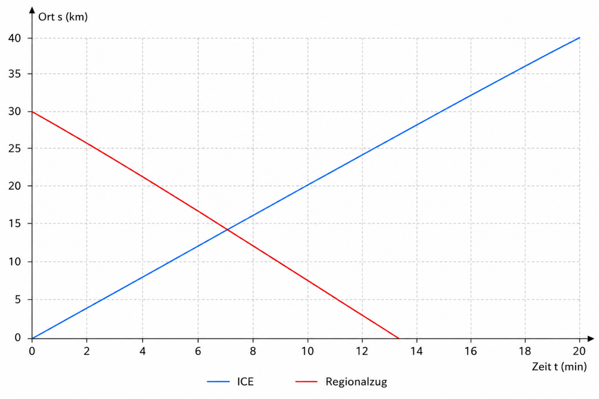

Aufgabe 1: Zugunglück?
Kurz vor Berlin kommt es zu einer Störung im Bahnverkehr. Der ICE fährt auf einem Streckenabschnitt, auf dem normalerweise nur Züge in einer Richtung verkehren. Aufgrund einer Verspätung wurde jedoch ein Regionalzug irrtümlich auf dasselbe Gleis geschickt. Beide Züge fahren nun aufeinander zu. Das t-s-Diagramm, welches die Bewegung der beiden Züge beschreibt, sieht aus wie folgt:

Bearbeite mithilfe des Diagramms die folgenden Aufgaben:
Die nächste Weiche, über die der Regionalzug auf ein anderes Gleis geleitet werden kann, befindet sich bei Streckenkilometer 20.
Aufgabe 2: Straßenüberquerung
Nach einer langen Zugfahrt kommt die Klasse 10C am Berliner Hauptbahnhof an. Gemeinsam mit den Lehrkräften machen sie sich auf den Weg zur Unterkunft. Die Stimmung ist gut, alle sind gespannt auf die kommenden Tage in Berlin. Als die Gruppe an einer großen Kreuzung in der Nähe des Hauptbahnhofs ankommt, zeigt die Fußgängerampel rot. Die Schülerinnen und Schüler bleiben stehen und warten auf Grün – mit zwei Ausnahmen: Lenny Lichtignor und Nina Nichtstopp haben keine Lust zu warten. „Ach komm, hier kennt uns doch keiner!“, sagt Lenny grinsend. „Und die Unterkunft ist gleich da vorne“, ergänzt Nina. Die beiden betreten die Fahrbahn, obwohl die Ampel noch rot zeigt. In diesem Moment bemerken sie ein Auto, das sie zuvor übersehen haben. Gleichzeitig erkennt der Autofahrer die beiden auf der Straße und beginnt dann zu bremsen.
Der Autofahrer fährt mit einer Geschwindigkeit von \(v = 50\,\frac{\mathrm{km}}{\mathrm{h}}\). Als er Lenny und Nina sieht, befindet sich sein Auto noch \(s = 35\,\mathrm{m}\) von ihnen entfernt. Seine Reaktionszeit beträgt \(t_R = 0{,}80\,\mathrm{s}\). Das Auto kann mit einer konstanten Bremsverzögerung von \(a = -7{,}0\,\frac{\mathrm{m}}{\mathrm{s}^2}\) abbremsen.
Hinweis: Der gesamte Anhalteweg eines Fahrzeugs setzt sich aus zwei Teilen zusammen: dem Weg, der während der Reaktionszeit zurückgelegt wird, und dem Bremsweg, der während des Abbremsens bis zum Stillstand entsteht. Hier wird die Reaktionszeit nicht berücksichtigt.
Hinweis: Teilaufgabe d) kann nur bearbeitet werden, wenn Teilaufgabe b) und c) richtig gelöst wurden